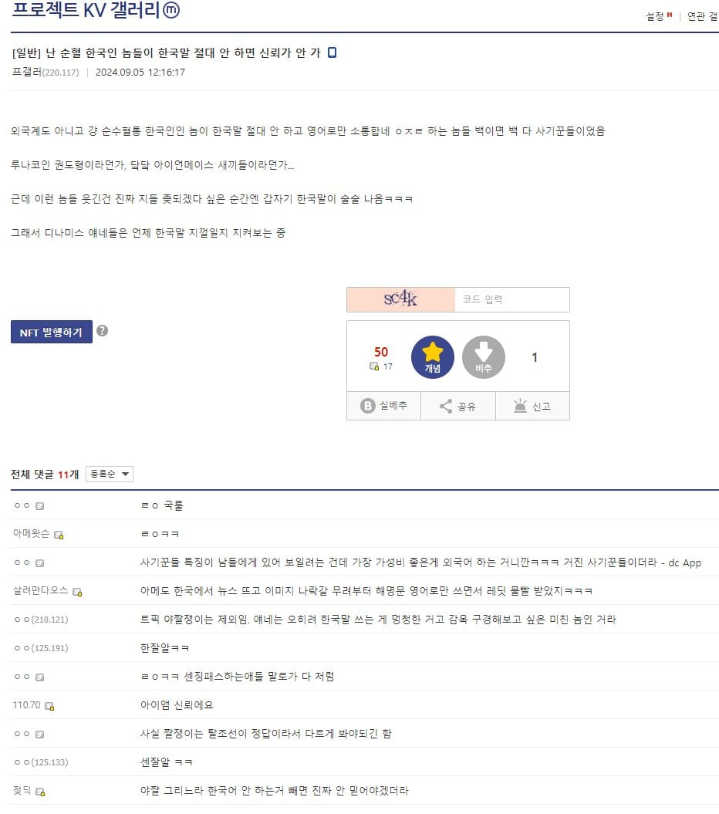
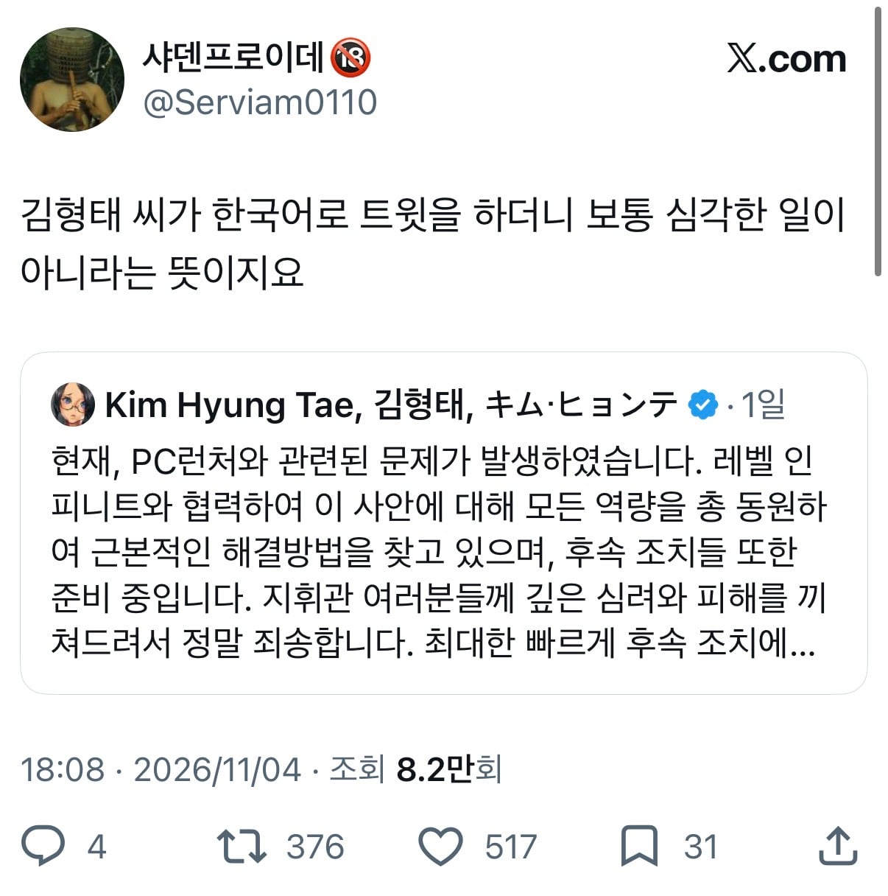
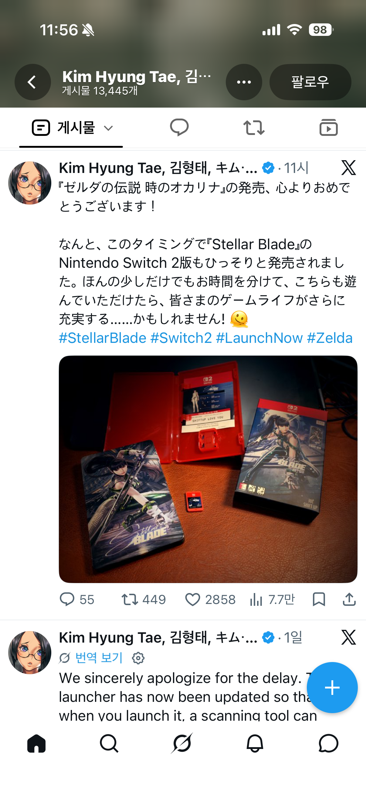

처음 알았네 ㅋㅋㅋㅋ



처음 알았네 ㅋㅋㅋㅋ
AI 축전 그릴때 한국어 했던거 같은데 그때 쳐맞고 한국어 접었나
김형태 프사 아직 저거냐 ㅋㅋㅋㅋㅋ
야스쿠니 차일드
심지어 기무라 횬타이는 게임 문제 생겨도
공지는 절대 안적음
근데 한국어에 공지까지 썼다? ㅋㅋㅋ
니케는 일뽕이 더 심함
Top plz
ㅋㅋㅋㅋㅋ
왤케 민심이 안좋음 김형태?
데스티니차일드 때부터 민심 안좋았는데
니케 해킹사태 터지고 더 나락갔지
데차 때 당한 사람들한텐 이미 개씹좆이었음
키무라횬타이상 민심 좋았 던 적 거의 없을걸?
1. 원래부터 여자그릴때 몸매 부각으로 여초쪽으로 안좋았음
2. 데차때 페미 내쫓았다고 여초쪽으로 더 안좋아졌음
3. 데차 섭종때문에 데차하던 남초쪽으로도 안좋아졌음
4. AI그림 적극 사용하는거 때문에 해외 그림쟁이들한테도 여론 안좋아졌음
코리안 패싱 빡세게함
야스쿠니 차일드 시절엔 지도가 서울이다고 구라쳤는데 알고보니 도쿄였고
추가요소 한국적인거 싹다 빼버림
니케는 순수 일뽕으로 유명한데 이번에 홍련이 한중일 색체를 다 녹여뒀던걸
이번에 메카 복장으로 바꿨는데 거기까진 오케이 였음
근데 이게 시발 갑옷 다 벗더니 안에서 완벽한 쿠노이치 복장으로 튀어나오게 바꿔서 민심 또 작살남
김형태는 한국 느낌을 의도적으로 배제하는 성향이 굉장히 강함
우리야 지금와서 아머드 태종이니 뭐니 하면서 낄낄대지만 형태게이 태어난 년도가 딱 똘이장군 나왔을 78년도고 어렸을 때 느꼈던 그 문화격차를 생각해보면 한국 문화에 대한 인식의 편린을 알 수 있지 않을까...
난 메카복장마저 일색 존나 짙어 보이던데....
보자마자 다이묘 갑옷 생각났음....
기무라횬타이상 민심은 데챠때부터 박았고 니케와서도 한섭 유저 개돼지 취급에 버그,핵,대리 사건 연달아 터져서 민심 개창나있는데 한번도 본인이 대응안하다가 해킹사건 터지니 쳐기어나오잔아 ㅋㅋㅋㅋ
쿠팡 의장도 마찬가지
개추
단번에 이해!
zzzzzzzzㅋㅋㅋㅋㅋㅋㅋㅋㅋㅋㅋㅋㅋㅋ
키무라 횬타이…
I'm 신뢰에요
또라이트~